01
Tábuas e pranchas
Para obras, estruturas, embalagens e aplicações que pedem madeira resistente e bem selecionada.
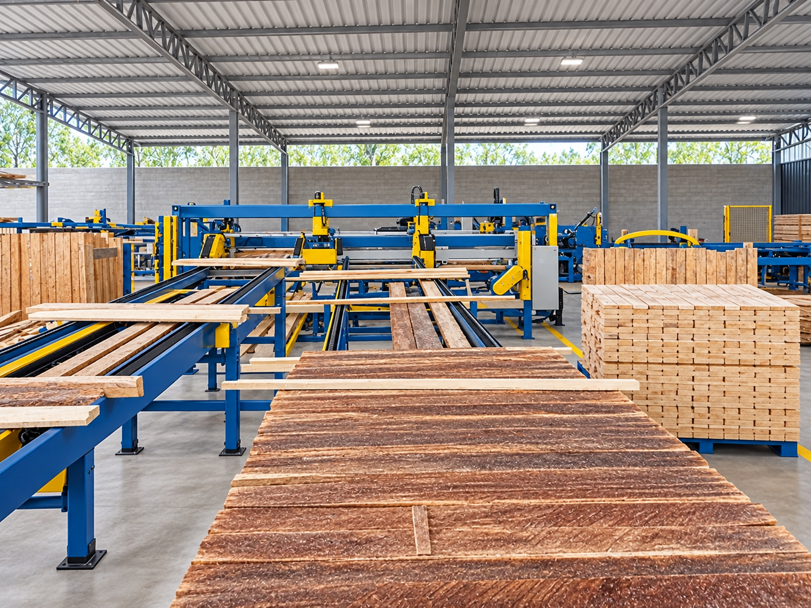
COMÉRCIO DE MADEIRAS VANMARTE
Atendimento próximo, madeira serrada em diversas medidas e negociação feita com clareza do início ao carregamento.
PARA QUEM TRABALHA COM MADEIRA
Atendemos empresas, construtoras, paleteiras, marcenarias, revendas e clientes que precisam de madeira para projetos específicos. Conte a medida e a quantidade que você procura; nossa equipe retorna com a melhor alternativa disponível.
LINHA DE PRODUTOS
01
Para obras, estruturas, embalagens e aplicações que pedem madeira resistente e bem selecionada.
02
Fornecimento de tábuas por medida e configuração para a produção de paletes e embalagens.
03
Informe espessura, largura, comprimento e quantidade. Avaliamos a configuração adequada para o seu pedido.
VANMARTE EM MOVIMENTO
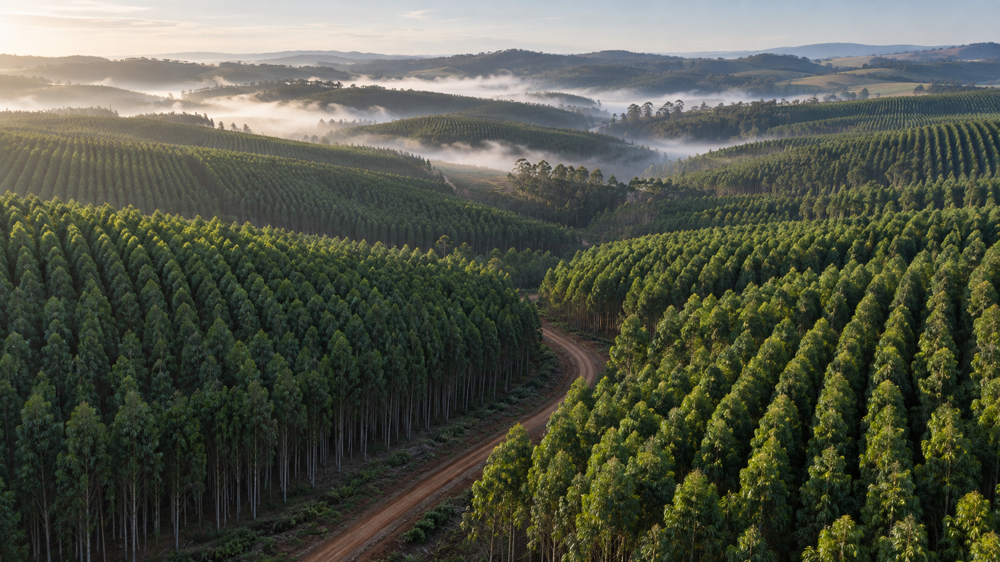
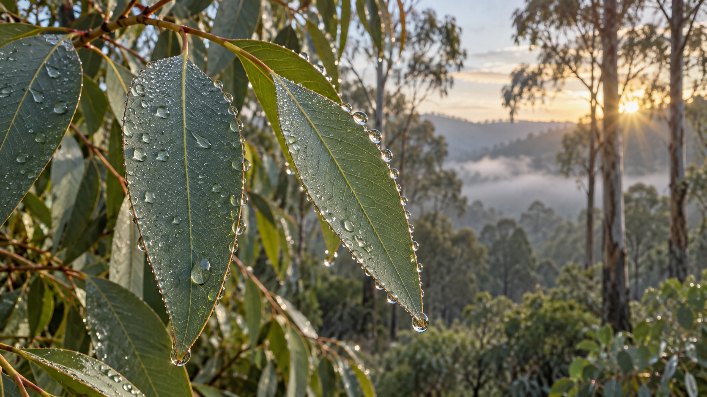
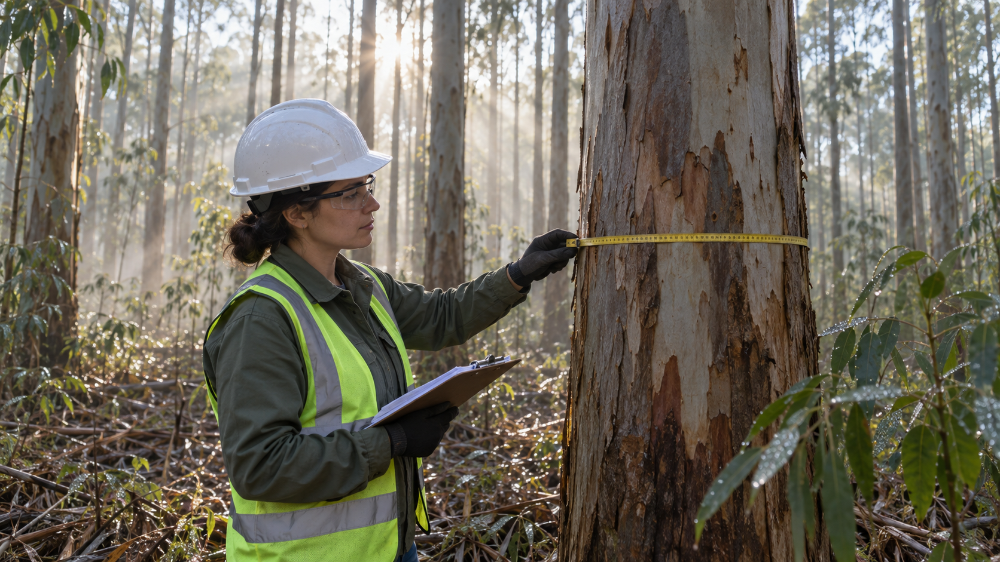
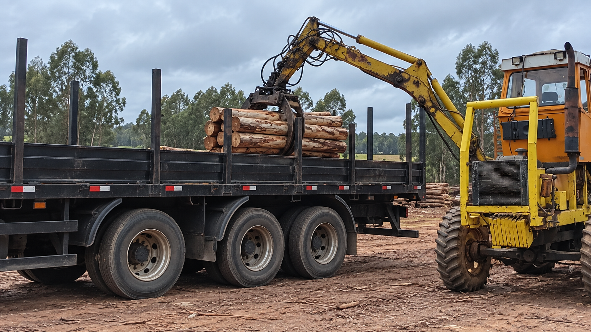
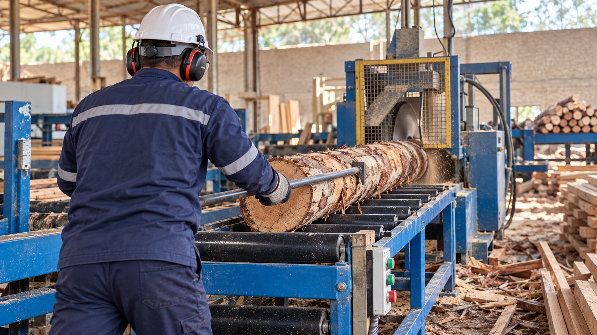
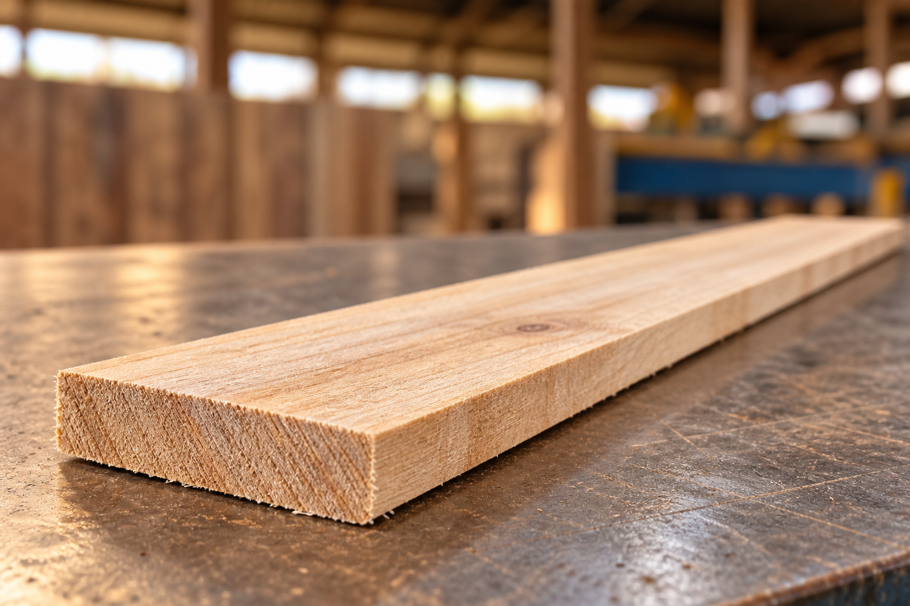
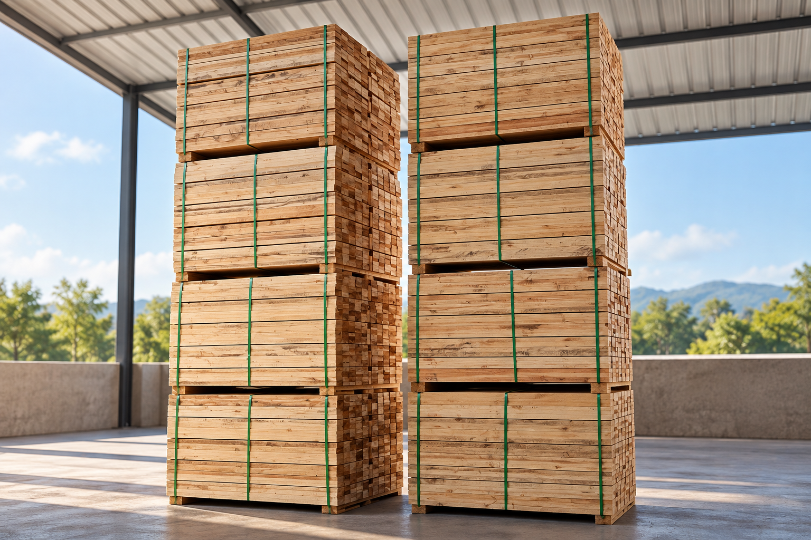
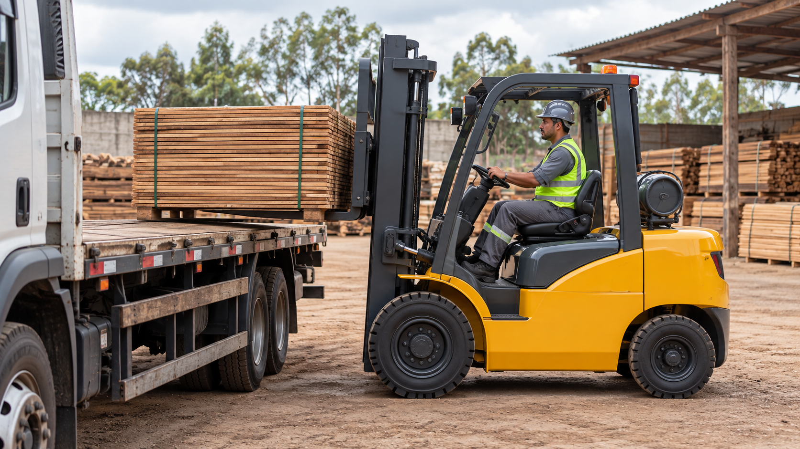
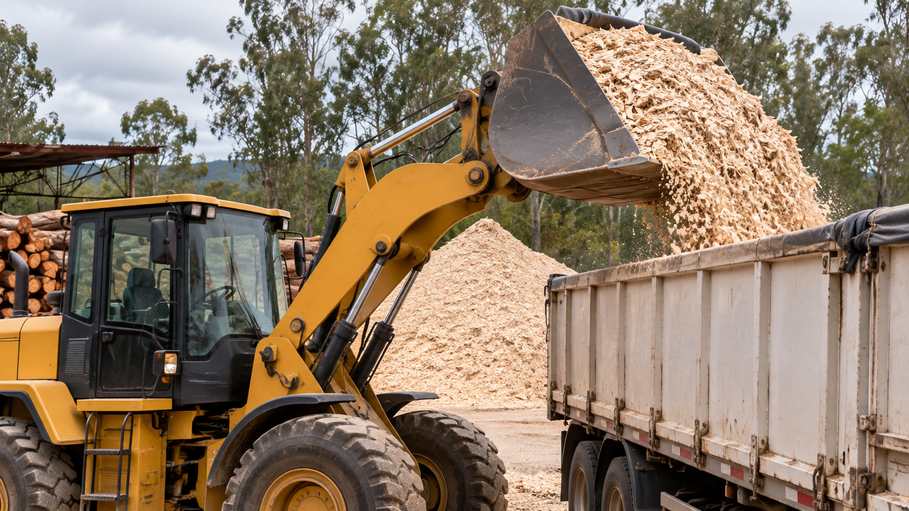
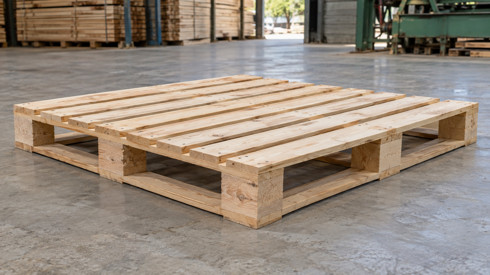
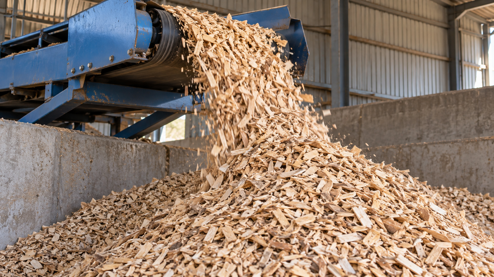
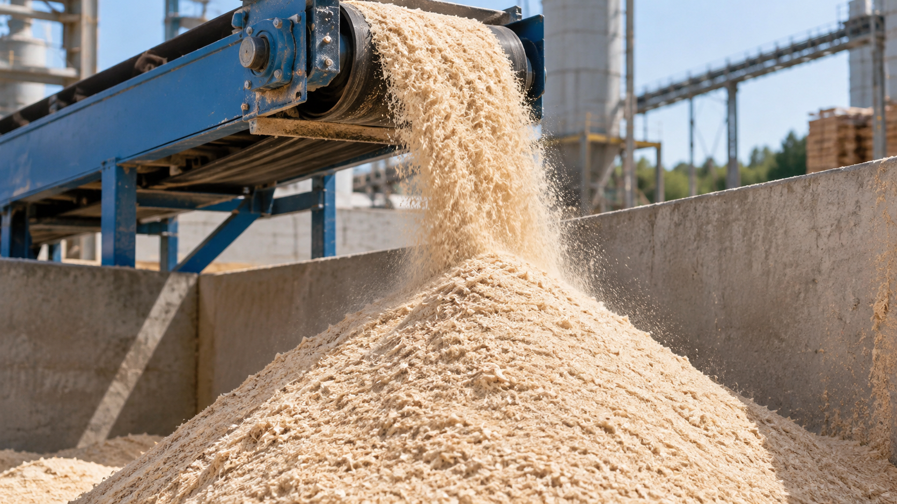
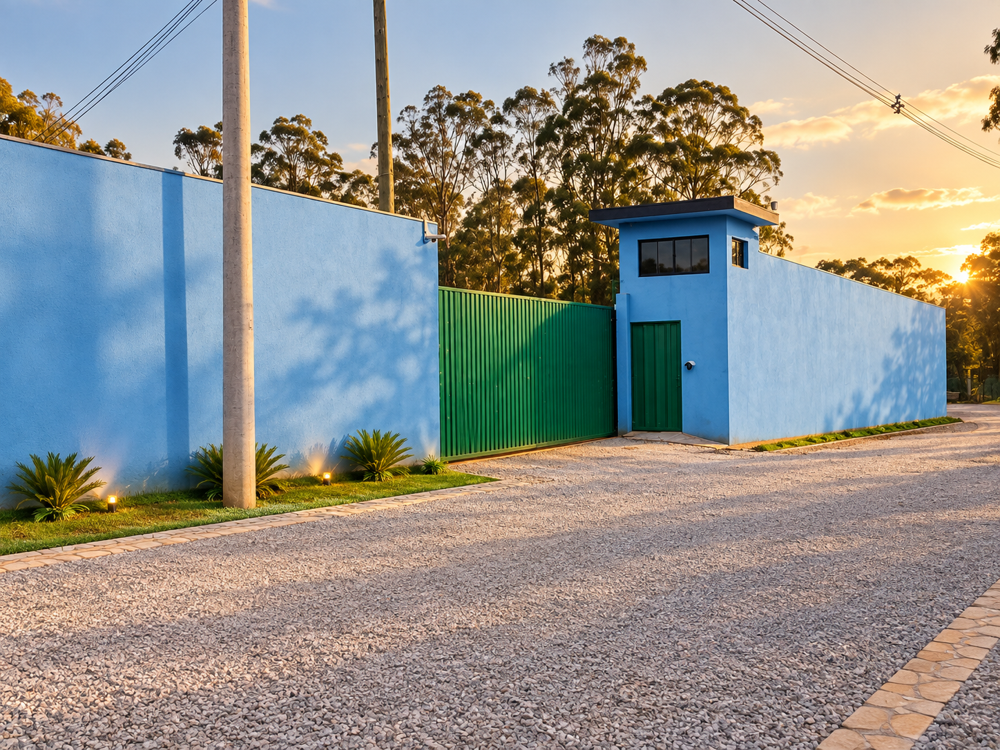
ATENDIMENTO QUE ACOMPANHA A OPERAÇÃO
Orçamento sob consultaRetorno para alinhar medida, volume e disponibilidade.
Separação e carregamentoOrganização do pedido para retirada ou transporte sob consulta.
Contato diretoConverse pelo WhatsApp e acompanhe sua negociação com a equipe.
LOCALIZAÇÃO E ENTREGA
Estamos na Estrada do Taquari, 217, em Ribeirão Branco - SP. Abra o mapa para calcular o trajeto a partir da sua cidade e fale com a equipe para cotar o transporte.
VAMOS CONVERSAR
Preencha as informações essenciais. Ao enviar, abriremos o WhatsApp com seu pedido organizado para a equipe comercial.
VANMARTE EM RIBEIRÃO BRANCO
Com base em Ribeirão Branco, São Paulo, a Vanmarte trabalha para entender o uso de cada pedido e manter uma negociação clara. Fale com a nossa equipe para consultar produtos, medidas, prazos, retirada e condições de transporte.